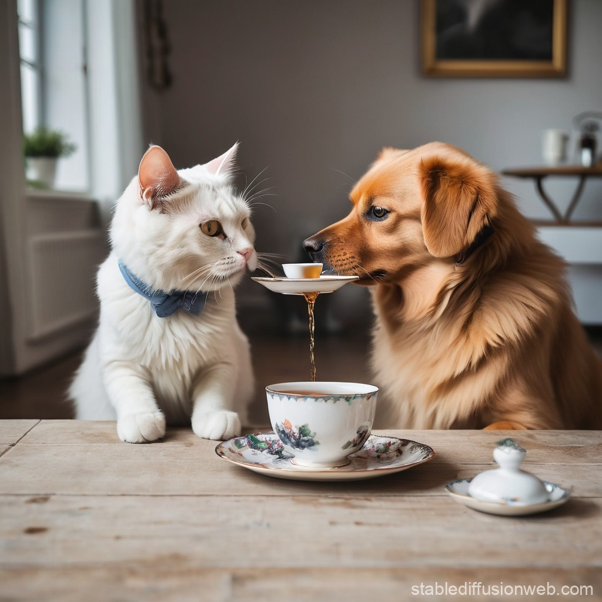

You want to have tea time with a puppy and we've got you covered. Enjoy our state of the art tea brewed with the finest
precision and the most bewildering ingredients. All the while you get swarmed by only the most aristocratic of puppies that have been
well trained in the art of tea and fine dining.

That's right we even have cats but we prefer puppies so we're sticking with "Puppy Cafe".
Meet the Puppies
Max
A playful energetic puppy that's always full of surprise
He enjoys being the centre of attention and loves pets!
Breed: Beagle
Favourite Activity: Going for runs
Vaccines: Up to Date
Baxter
A curious puppy that's always interested in meeting new people
He's our honourary tour guide for Puppy Cafe, delivering 5 star service
Breed: Cockapoo
Favourite Activity: Taking a nap
Vaccines: Up to Date
Mae
A shy cat that somehow ended up in our cafe
Mae get's along with everyone but tends to hide whenever there's a new face
Breed: Grey cat
Favourite Activity: Scheming against the puppies
Vaccines: Up to Date